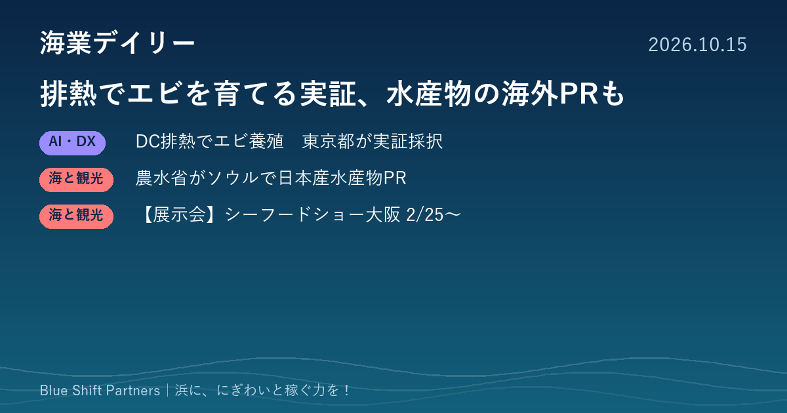

2026.10.15
排熱でエビを育てる実証、水産物の海外PRも

東京都がデータセンターの排熱をエビの陸上養殖に生かす実証を採択しました。農林水産省はソウルの交流イベントに初めて出展して日本産水産物をPRしています。来年2月のシーフードショー大阪に向けた出展募集の動きもお伝えします。
東京都、データセンターの排熱でバナメイエビを育てる陸上養殖の実証を採択
東京都環境局は10月6日、データセンターの排熱など未利用熱の活用をめざす「スタートアップによる未利用熱活用促進事業」で3件の協業プロジェクトを採択したと発表しました。その1件が、IMTエンジニアリングとNTTドコモビジネスによる「排熱活用型陸上養殖システムの構築」で、排熱を加温の熱源にしてバナメイエビの飼育を実証します。水温の安定やエネルギーコストの削減効果を数値で確かめ、排熱の条件から養殖施設の規模を決める設計手法をつくり、ほかのデータセンターへの展開をめざすとしています。プロジェクトは10月に始まり、令和9年3月に中間報告、令和10年3月に最終報告の予定です。
ここがポイント：陸上養殖の大きな負担である加温コストを、近くの施設の排熱でまかなう発想です。漁港周辺の工場や発電所など、地域にある熱源と養殖を組み合わせる検討のヒントになります。
出典：東京都環境局「データセンター排熱の新たな活用に取り組む3つの協業プロジェクトを採択」（2026-10-06）
農林水産省、ソウルの「日韓交流おまつり」に初出展し日本産水産物をPR
農林水産省は10月10日、森下農林水産大臣政務官が10月9日から10日にかけて韓国・ソウルを訪れた結果の概要を公表しました。政務官は「日韓交流おまつり2026 in ソウル」に出席し、同省が初めて出展したブースで日本産水産物の魅力と安全性を発信しました。あわせて日本食普及の親善大使との意見交換や、輸出拡大に向けた関係者への働きかけ、現地の小売店の視察も行ったとしています。
ここがポイント：国が海外の消費者に向けて日本の魚の魅力と安全性を直接伝える場を広げています。輸出や訪日客向けの販売を考える浜の事業者にとって、追い風になる動きです。
出典：農林水産省「森下農林水産大臣政務官の海外出張（韓国）結果概要について」（2026-10-10）
【展示会】シーフードショー大阪（来年2月）、宮城県が県ブースの出展者を募集
宮城県は10月8日、第24回「シーフードショー大阪」に設ける宮城県ブースの出展者募集を始めました。会期は令和9年2月25日・26日、会場は大阪市住之江区のATCホールです。対象は県内に本社か事業所のある事業者で19者程度、1小間（2m×2m）13万円（税抜）、申込は11月13日までにみやぎ電子申請サービスで受け付けます。
ここがポイント：関西の食品バイヤーと商談できる展示会に、県のブースを通じて出やすくする仕組みです。宮城県以外の浜の事業者も、地元の県や市町村に同様の共同出展の支援がないか確かめる価値があります。
出典：宮城県 水産業振興課「第24回『シーフードショー大阪』宮城県ブース出展者を募集します」（2026-10-08）
陸上養殖は、水温を保つ熱の費用をどう抑えるかが採算の分かれ目です。地域にある排熱や空き施設といった手元の資源を組み合わせる発想は、浜の新しい稼ぎ口を考えるうえで大きなヒントになります。